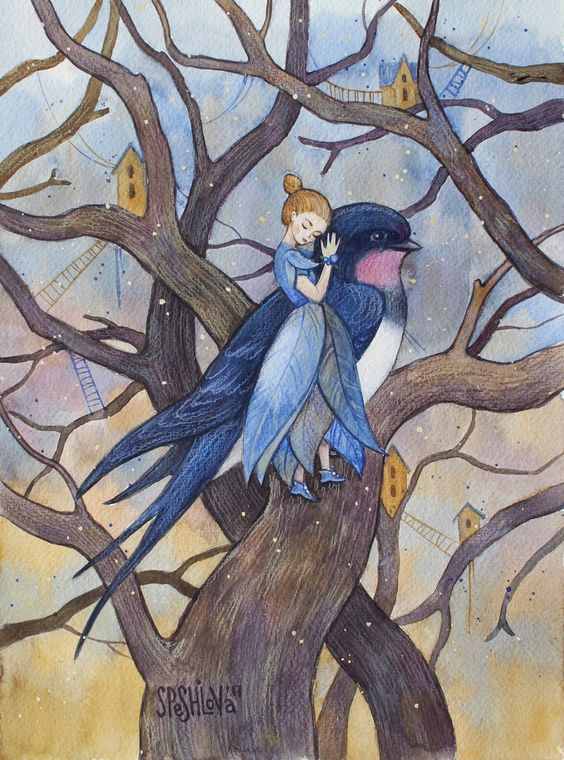

Outside the castle there was a beautiful garden, in which grew bright-red and dark-blue flowers, and blossoms like flames of fire; the fruit glittered like gold, and the leaves and stems waved to and fro continually. The earth itself was the finest sand, but blue as the flame of burning sulphur. Over everything lay a peculiar blue radiance, as if the blue sky were everywhere, above and below, instead of the dark depths of the sea. In calm weather the sun could be seen, looking like a reddish-purple flower with light streaming from the calyx.
The sun had just set when she raised her head above the waves. The clouds were tinted with crimson and gold, and through the glimmering twilight beamed the evening star in all its beauty. The sea was calm, and the air mild and fresh. A large ship with three masts lay becalmed on the water; only one sail was set, for not a breeze stirred, and the sailors sat idle on deck or amidst the rigging. There was music and song on board, and as darkness came on, a hundred colored lanterns were lighted, as if the flags of all nations waved in the air.


 Thumbelina had to turn the spindle, and the field mouse hired four spiders to spin and weave for her day and night. The mole came to call every evening, and his favorite remark was that the sun, which now baked the earth as hard as a rock, would not be nearly so hot when summer was over. Yes, as soon as summer was past he would be marrying Thumbelina. But she was not at all happy about it, because she didn't like the tedious mole the least bit. Every morning at sunrise and every evening at sunset, she would steal out the door. When the breeze blew the ears of grain apart she could catch glimpses of the blue sky. She could dream about how bright and fair it was out of doors, and how she wished she would see her dear swallow again. But he did not come back, for doubtless he was far away, flying about in the lovely green woods.
The end